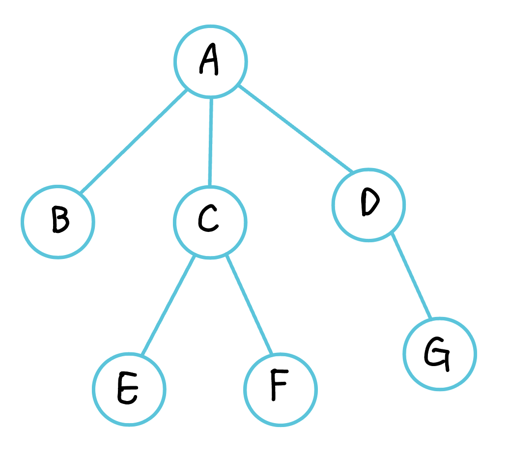
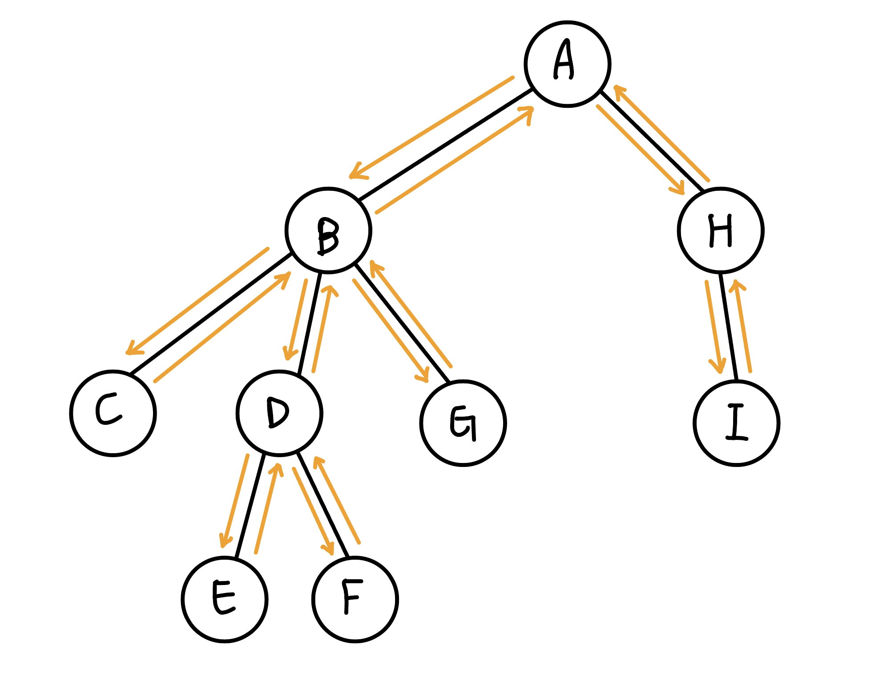
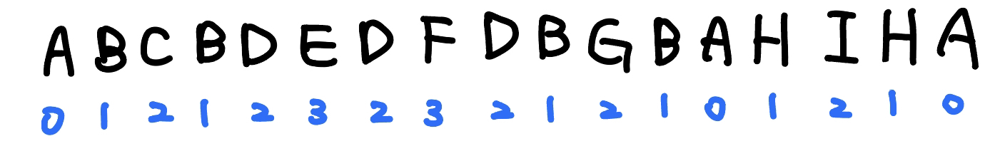

倍增法與 LCA
倍增法¶
跳到一個位置 t，使 check(t) = true，check(t + 1) = false。利用二進制枚舉高位到低位，若跳了之後是合法的就跳
code
在某些題目, 最好還是將越界的倍增數組定義好無效狀態, 例如說 -1, INF 等等
例如說 dp(i, 0) = nxt[i]，但如果沒有設好狀態可能會使 nxt[i] = 0, 導致 dp(i, 0) = 0，然後 dp(i, j) = dp(dp(i, j - 1), j - 1) = dp(0, j - 1) = 0。這樣在 query 時，看能不能 jump 的時候會發現 0 < r，不會超過所以可以 jump，導致最後答案壞掉
2021 附中模競 pE. 時空旅人之爭 (Time)
給一棵 \(n\) 個點的樹，複製人大軍會從 root 開始擴散，每 2 秒擴散一個節點。有 \(q\) 筆詢問:
- \(\text{query}(s,t):\) 從入侵的時間點開始，從 \(s\) 到 \(t\) 至少要經過幾個有複製人大軍的節點
\(n,q\le 2\times 10^5\)
思路
分別在 path(s, lca(s, t)) 跟 path(lca(s, t), t) 上面二分搜，看到哪個點會被追到
要看從 s 開始到點 x 是否會被追到就看「s 走到 x 的時間是否小於 root 走到 x 的時間」，若滿足的話就代表不會被追到。可以寫成 dis(s, x) < dep(x) * 2
code
1 2 3 4 5 6 7 8 9 10 11 12 13 14 15 16 17 18 19 20 21 22 23 24 25 26 27 28 29 30 31 32 33 34 35 36 37 38 39 40 41 42 43 44 45 46 47 48 49 50 51 52 53 54 55 56 57 58 59 60 61 62 63 64 65 66 67 68 69 70 71 72 73 74 75 76 77 78 79 80 81 82 83 84 85 86 87 88 89 90 91 92 93 94 95 96 97 98 99 100 101 102 103 104 105 106 107 108 109 | |
CSES - Movie Queries
給 n 個 interval，有 q 筆詢問:
- query(s, t): 在 [s, t] 最多能選幾個 interval 使兩兩不 overlap
\(n,q\le 2\times 10^5\)
思路
我們想要看最多能跳幾格滿足最大的右界不超過 t，所以我們定義 dp(i, j) = 從 i 之後開始選 2^j 個 interval，結尾最小是多少
-
base case:
-
每個 interval[l, r] 將 dp(l, 0) = r
-
dp(i, 0) = min(dp(i + 1), 0)
-
-
轉移式:
- dp(i, j) = dp(dp(i, j - 1), j - 1)
code
CF 1143 E. Lynyrd Skynyrd
給你一個長度為 \(n\) 陣列 \(p\)，再給你長度為 \(m\) 一個陣列 \(a\)，有 \(q\) 筆查詢:
- \(\text{query}(l, r):\) \(a_l, \ldots ,a_r\) 有沒有子序列是屬於 \(p\) 的 cycle shift
\(n, m, q\le 2\times 10^5\)
思路
定義 nxt[i] = i 最少要哪裡才能找到 a[i] 在 cycle 的下一項
我們會需要快速的求出，對於所有 1 <= i <= n，nxt[nxt[nxt[i]]]（共 n - 1 次），考慮倍增，dp(i, j) 為從 i 開頭要找到長度為 2^j cycle shift 至少要選到哪裡
-
base case: dp(i, 0) = nxt[i]
-
轉移式: dp(i, j) = dp(dp(i, j - 1), j - 1)
最後我們令 ans[i] = i 開頭要找到長度為 n - 1 的 cycle shift 至少要選到哪裡，這可以用倍增法查表得到，之後，我們可以將 ans[ ] 做一個後綴最小值，也就是 ans[i] = min(ans[i + 1], ans[i])，答案就會是看 ans[l] 是否 <= r 即可。
CF 1175 E. Minimal Segment Cover
給 n 個 interval，有 q 筆詢問:
- query(s, t): 問要將 point[s, t] 都覆蓋至少要挑幾個 interval
\(n,q\le 2\times 10^5, 0\le l_i<r_i\le 5\times 10^5\)
思路
令 dp(i, j) = i 開始選 2^j 個 interval 最多能完整覆蓋到哪裡
-
- 對於輸入的所有 interval [l, r]，將 dp(l, 0) = r
base case:
- dp(i, 0) = max{dp(i, 0), dp(i - 1, 0)}
-
轉移: dp(i, j) = dp(dp(i, j - 1), j - 1)
code
USACO 2013 OPEN Luxury River Cruise S
給一張 n 點的圖，每個點有兩個出邊。給定一條長度為 m 的指令，從位置 1 出發按照指令移動 k 輪，求最終位置
思路
一道模擬題，我們來想怎麼優化。因為指令是重複的，所以我們可以跑完一輪後，用倍增數組求解，類似 USACO - Swapity Swapity Swap。
令 dp(i, j) 表示以 i 為起點將操作序列進行 \(2^j\) 次後，Bessie 所停留在的點。用倍增下去轉移就好。
最後尋找答案時，將 k 二進制拆分，利用上面 jump 的方法求解即可
USACO 2020 FEB Swapity Swapity Swap S
有 n 頭牛編號 1...n，每一個長度為 m 的方案 \((l_1,r_1),\ldots ,(l_m, r_m)\)，代表依序將 \(l_i\) 與 \(r_i\) swap。讓她們重複這個方案 k 回合，然後依序輸出從左到右每頭牛的編號
\(n\le 10^5, m\le 100\)
思路
令 dp(i, j) 表示以 i 這個位置在方案進行 \(2^j\) 回合後，會到哪個位置。
先用 O(nm) 的時間，跑個一回合預處理 dp(i, 0) 即可利用倍增法求解。
時間標記¶
對於每個點，我們開兩個陣列 in 與 out 來記錄每個點進入 dfs 時和結束 dfs 時的時間點。當 u 是 v 的祖先，代表我們會先進入 u，進入 v，再從 v 出去，再從 u 出去，即 in[u] ≤ in[v] ≤ out[v] ≤ out[u]
例如說 (A, F) 因為 1 ≤ 7 ≤ 8 ≤ 14，所以是祖先關係，而 (B, E) 因為 2 ≤ 5 ≤ 6 ≤ 3，所以不是祖先關係
判斷是否為祖先
LCA 介紹¶

在有根樹中，給兩個點 u, v，高度最低的共同祖先即為 LCA
-
LCA(E, F) = C
-
LCA(E, G) = A
-
LCA(F, C) = C
LCA 性質¶
- 兩點集 union 起來的 LCA 為兩點集分別的 LCA 的 LCA，舉例來說 \(\text{lca}(a, b, c)\) 等於 \(\text{lca}(\text{lca}(a, b), c)\)
- \(dis(u,v)=\text{depth}(u)+\text{depth}(v)-2\times \text{depth}(\text{lca}(u,v))\)
使用倍增法查詢 LCA¶
先看 u, v 哪個點比較深，從深的那個點看 dep(u) - dep(v) 的二進制，利用倍增法往上跳，跳到直到 dep(u) = dep(v) 時，若原本 u, v 就是祖孫關係，那麼就結束了，否則，我們就可以用倍增法枚舉高位到低位:
-
若 pa(u, k) = pa(v, k) 代表跳太多了，不能跳
-
否則就跳 k 格
最後，u, v 恰好會跳到 lca 的下面一格(也就是 lca 的 children 上)
code
樹壓平找 LCA¶

當我們把樹的 euler tour 列出來後，兩點 \((u,v)\) 之間的 LCA 就是區間 \([u,v]\) 內深度最小的那個

例題¶
Zerojudge c313. PF:終末之塔
給一顆 \(n\) 個點的樹，邊有權重，\(q\) 次詢問兩點之間所有邊權的最大值
\(n, q\le 10^4\)
思路
可以用倍增法 + dp 來做到，令 dp(i, j) = 從 i 開始到往 2^j 格間的最大邊權，在 find lca 的過程中，就可以順便去查表 dp(i, j)
TIOJ 1687 . 樹上詢問 Query on a Tree II
給一顆 \(n\) 個點的樹，有 \(q\) 筆以下查詢:
- \(\text{query}(u,v,k):\) 問 \(u\) 往 \(v\) 走 \(k\) 步走到的點
\(n\le 10^5, q\le 2\times 10^5\)
code
Atcoder abc267 F. Exactly K Steps
給一棵 \(n\) 個點的樹，邊權為 \(1\)，進行 \(q\) 次詢問，每次輸出任意一個離結點 \(u\) 距離為 \(k\) 的節點
\(n,q\le 2\times 10^5\)
思路
最遠的點一定是樹直徑的端點
令距離 \(u\) 比較遠的那個端點為 \(R\)，先看 \(u\to\texttt{LCA}(u, R)\) 是否比 \(k\) 步多，如果還沒有就從較遠的端點往上爬
https://www.cnblogs.com/DM11/p/16701069.html
code (by cnblog)
全國賽 2018 p7. 不回家的銷售員
給一個 \(n\) 個點的無根樹，邊帶權，有 \(q\) 筆查詢 :
- 給 \(k\)，給個指定的點 \(v_1,\ldots ,v_k\)，輸出經過這些指定的點至少一次的最短路徑長度
\(n\le 10^5, \sum k \le 2n\)
思路
考慮所有點都選，答案 = 除了某一條 path 之外所有邊都走過兩次 = 樹上邊權總和 \(\times 2\) - 最遠點對距離（樹直徑）
考慮一些點所形成的子圖的答案，樹上邊權總和 \(\times 2\) - 最遠點對距離（樹直徑）。對於邊權總和，會形成一條迴路
考慮 dfs 序是一進一出，剛好每條邊都走過兩次。我們將有選的點 \(v_1,\ldots v_k\) 按照 dfs 序小到大排序，\(ans=dis(v_1,v_2)+dis(v_2, v_3) + \ldots + dis(v_k, v_1)\)。對於樹直徑，我們用兩次貪心的方法做，先隨便挑一個指定的點，枚舉其他指定點，用 LCA 算與他們之中的誰距離最大，然後再從那個點做一次，總複雜度 \(O(\sum k \log n)\)
參考 : https://sorahisa-rank.github.io/nhspc-fin/2018/editorial.pdf#page=23
全國賽模擬賽 2022 pF. LCA 遊戲 (LCA)
給一顆 \(n\) 個點的樹，給點 \(A\)，Alice 會想著一個點 \(B\)，Bob 的目標是找出 \(B\)。每次 Bob 可以詢問 :
- 把 root 定為 \(C\)，\(\text{lca}(A, B)\) 是多少
兩者皆 play optimal 的情況下，問 Bob 至少需要詢問幾次
思路
等價於將根都定為 A，LCA(B, C) 是多少
每次詢問完都會確定答案是不是在這子樹，如果要確定在哪個子樹，最差要用「子樹數量 -1 次」，所以要花費最多次的子樹必定最先詢問，所以可以列出 :
假設 \(v_1, v_2, \ldots\) 是以 \(dp[v_1] \ge dp[v_2] \ge \ldots\) 排序過的
JOI 2022 Final 铁路旅行 2
給 \(n\) 個點，\(m\) 條線路，第 \(i\) 條線起點為 \(a_i\)，終點為 \(b_i\)，上車的位置不能離起點超過 \(k\) 個點，可在任何一站下車。有 \(q\) 筆詢問:
- \(\text{query}(s,t):\) 從 \(s\) 開始到 \(t\)，最少搭乘幾條不同的線路，若無論如何都沒辦法則輸出 -1
\(n\le 10^5,m\le 2\times 10^5,q\le 5\times 10^4\)
思路
目前的經驗來看，凡是需要多次無序詢問或重複多次處理一張圖時，大機率是需要用到倍增的。
令 \(le(i,j),ri(i,j)\) 以 \(i\) 為起點，搭乘 \(2^j\) 條不同的線路，最左/右能到哪裡
初始值 \(le(i,0),re(i,0)\) 可以利用單調隊列來維護，例如 \(re(i,0)\)，我們一開始先將 interval 用左界小到大 sort，然後 queue 中保留的會是 \(l_i\) 遞增，\(r_i\) 遞減
那麼轉移的部分我可以對於每個 \(le(*,j),re(*,j)\) 都開一顆線段樹，直接去區間查詢極值即可
最後 \(\text{query}(s,t)\) 我們用類似 LCA 查詢的方式，從 \(s\) 開始擴展，直到區間恰好差一點涵蓋 \([s,t]\)
code
1 2 3 4 5 6 7 8 9 10 11 12 13 14 15 16 17 18 19 20 21 22 23 24 25 26 27 28 29 30 31 32 33 34 35 36 37 38 39 40 41 42 43 44 45 46 47 48 49 50 51 52 53 54 55 56 57 58 59 60 61 62 63 64 65 66 67 68 69 70 71 72 73 74 75 76 77 78 79 80 81 82 83 84 85 86 87 88 89 90 91 92 93 94 95 96 97 98 99 100 101 102 103 104 105 106 107 108 109 110 111 112 113 114 115 116 117 118 119 120 121 122 123 124 125 126 127 128 129 130 131 132 133 134 135 136 137 138 139 140 141 142 143 144 145 146 147 148 149 | |
CSES - Cyclic Array
給一個長度為 \(n\) 的環狀陣列 \(a_1,\ldots ,a_n\)，問至少分成幾段可使每段的總和都 \(\le k\)
\(n\le 2\times 10^5, 1\le a_i\le 10^9,1\le k\le 10^{18}\)
思路
倍增法，\(dp(i,j)\) 為從 \(i\) 開始，跳了 \(2^j\) 段 subarray，最遠可跳到哪裡，轉移如下
初始化的話 \(dp(i,0)\) 就是從 \(i\) 開始最遠走到哪裡總和還是 \(\le k\)
所以我們就可以枚舉起點，利用二分搜 Jumping 寫法看至少需要幾段 subarray，也就是從高 bit 開始往下枚舉，若跳 \(2^j\) 段不會超過終點的話就跳，然後最後再把所有起點的答案取 min 即可。複雜度 \(O(n\log n)\)
code
洛谷 P4281 [AHOI2008] 紧急集合 / 聚会 / CS Academy - Triplet Min Sum
給一個 \(n\) 個點的樹，有 \(q\) 筆查詢:
- \(\text{query}(a,b,c):\) 輸出與 \(a,b,c\) 三點距離和最小的點 \(x\)，並輸出 \(x\) 與三點的距離和
\(3\le n\le 10^5, 1\le q\le 10^5\)
思路
【觀察、結論題】
我們先將他們兩兩之間的 path 畫出來看看，我們先猜答案是 a, b, c 深度最低的兩個點的 lca
但如上圖，答案就會是錯的。那我們再猜答案是 lca(a, b), lca(b, c), lca(c, a) 之中深度最小的那個
來驗證一下正確性，假設是 lca(a, b) 深度最小，那麼我們可將 a, b 視為在同一個子樹裡面，root 為 lca(a, b)，若選的點在 lca(a, b) 更下面則離 3 個點的距離都更遠，若選的點在 lca(a, b) 更上面則會對 a, b 兩個點各產生 +1 的貢獻，也就是 + (往上移的距離) * 2，而對 c 產生 -1 的貢獻，也就是 - (往上移的距離) * 1，顯然離 a, b 越近越好才能使 * 2 的貢獻盡量小
對於 \(x\) 與三點的距離和，我們可以採用 dep(u) + dep(v) - 2 * dep(lca(u, v)) 的公式來計算